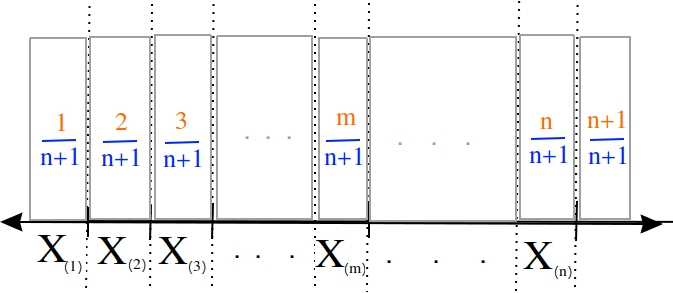

Point Estimation#
A sample of data is characterized numerically by point estimates of sample statistics.
Motivation#
In the first few sections, we discussed the idea of drawing a sample and using it to make inferences about the population . Now we begin the study of how to apply these ideas quantitatively and make them more exact.
We want to know the parameters of a population, but we do not have the entire population on hand to determine the values of these parameters. So, we sample the population and then calculate point estimates. Point estimates are sample statistics that represent our best guess of the true value of population parameters.
For example, in this section, we will introduce the idea of the sample mean, \(\bar{x}\). The sample mean is a sample statistic; It is an estimate. This in contrast to the population mean, \(\mu\), the true value of \(\bar{x}\) we would get if we had access to entire population.
In general, as we move through this section, keep in mind the following table,
Population Parameter |
Sample Statistic |
\(\mu\) |
\(\bar{x}\) |
\(\sigma\) |
\(s\) |
The left hand column of this table represents the true value of a quantity that describes the population distribution. The right hand column represents the estimated value of this quantity as derived from the sample distribution.
As we go through this section, keep in mind all the point estimators we introduce are sample statistics, not population parameters. In general, the population paramter is never known. We must always estimate its value.
Definitions#
Observation#
- Symbolic Expression
\(x_i\)
- Definition
An Individual; A single piece of data.
The subscript i is called the index of the observation. If the sample is ordered, the index corresponds to the order in which the observation was made, i.e. \(x_1\) is the first observation, \(x_2\) is the second observation, etc.
Sample#
- Symbolic Expression
\(S = \{ x_1, x_2, ..., x_{n-1}, x_n \}\)
- Definition
A collection, or set, of observations.
The number of samples, n, is called the sample size.
Frequency#
- Symbolic Expression
\(f(x_i)\)
- Definition
The number of times a particular observation \(x_i\) occurs in a sample of data.
Relative Frequency#
- Symbolic Expression
\(p(x_i)\)
- Definition
The percentage of times a particular observation \(x_i\) occurs in a sample of data.
Note by definition, in a sample of n observations,
Cumulative Frequency#
- Symbolic Expression
\(F(x_i)\)
- Definition
The number of times an observation less than of equal to \(x_i\) occurs in a sample of data.
Note the relation between frequency and cumulative frequency,
Important
Take note of the indices on the summation. The sum starts at the first observation and goes all the way up to the \(i^{\text{th}}\) observation.
Also note by definition,
Cumulative Relative Frequency#
- Symbolic Expression
\(P(x_i)\)
- Definition
The percentage of times an observation less than of equal to \(x_i\) occurs in a sample of data.
Note the relation between relative frequency and cumulative relative frequency,
Important
Take note of the indices on the summation. The sum starts at the first observation and goes all the way up to the \(i^{\text{th}}\) observation.
Another important relation to remember is the relative between cumulative frequency and cumulative relative frequency,
Also note by definition,
Joint Frequency#
- Symbolic Expression
\(f(x_i \cap y_i)\)
- Definition
The number of times a bivariate observation \((x_i, y_i)\) occurs in a sample of data.
Important
The joint frequency is only defined when the sample is bivariate.
Conditional Relative Frequency#
- Symbolic Expression
\(P(x_i | y_i)\)
- Definition
The proportion of times the outcomes \(x_i\) and \(y_i\) are observed as compared to the number of times the outcome \(y_i\) is observed alone.
By definition,
Important
Conditional frequencies are always relative.
Minimum#
- Symbolic Expression
\(min(\{ x_i \})\)
\(min(S)\)
\(x_{min}\)
- Definition
The smallest value in a sample of observations.
Maximum#
- Symbolic Expression
\(max(\{ x_i \})\)
\(max(S)\)
\(x_{max}\)
- Definition
The largest value in a sample of observations
Outliers#
- Definition
An unusual observation.
What we mean by “unusual” depends on the data. Generally speaking, we mean something that roughly approximates, “a data that is far outside what is expected”.
If we are measuring numerical data, this might mean an observation that is much, much greater than or much, much less than the majority of the data.
If we are measuring categorical data, this might mean an observation is in infrequent.
Floor Function#
- Symbolic Expression
- \[\lfloor x \rfloor\]
- Definition
The floor function returns the integer-valued part of a number. In other words, it removes the decimal from a number.
- Example
- \[\lfloor 4.5 \rfloor = 4\]
Ceiling Function#
- Symbolic Expression
- \[\lceil x \rceil\]
- Definition
The ceiling returns the next largest integer. In other words, it always rounds up.
- Example
- \[\lceil 4.5 \rceil = 5\]
Measures of Centrality#
Measures of centrality, sometimes known as measures of central tendency, describe where the “center” of a sample of data is located. What we mean by “center” is, in some sense, left to the reader’s intuition. A good analogy for the statistical conception of centrality comes from the field of physics: the idea of center of mass. The center of mass is the balance point, the point around which a body of mass is distributed so the torque generated by gravity is held is equilibrium. In this analogy, the mass is the sample of data. Centrality in a sample is a measure of its “center of mass”, so to speak.
Arithmetic Mean#
The arithmetic mean is a sample statistic you have probably seen before; what you probably didn’t know is it is not the only way of calculating the mean. You will see in the next few sections alternate ways of calculating a quantity that is meant to represent the mean of a sample. Each of these sample statistics represents a way of quantifying the notion of “central tendency”
Before getting to the good stuff, let’s review the arithmetic mean. There are two equivalent ways of defining the sample mean.
Sample Mean Formula#
If the sample of data is specified as a set or list of data as in the following,
Then the sample arithmetic mean can be calculated with the formula,
This is known as the sample mean formula for the arithmetic mean.
- Example
Suppose you survey 10 people and ask them how many of the 11 full-length, major motion picture Star Wars movies they have seen. Suppose the sample S of their responses is given below,
\[S = \{ 6, 7, 9, 0, 1, 0, 3, 6, 3, 9 \}\]Find the average number of Star Wars movies seen by this sample of people.
Applying the sample mean formula,
Note
Notice in this example the sample mean does not correspond to an observable value in the sample.
The sample mean is not even a possible value of an individual observation in this sample (unless we allow for people who stopped watching half-way through one of the movies).
Interlude#
Suppose in a sample of data S, some of the observations have identical values, such as in the following dataset that represents the age in years of an A.P Statistics student,
S = { 16, 16, 17, 18, 16, 17, 17, 17 }
Before moving on to calculate the sample mean, let us represent this sample S in an equivalent way using a table,
\(x_i\) |
\(f(x_i)\) |
16 |
3 |
17 |
4 |
18 |
1 |
This way of representing a sample of data, where the first column stands for the value of the observation and the second column that stands for the frequency of that observation, is known as a Frequency Distributions.
(We will study frequency distributions in more detail in the next section.)
Let us move on to the task at hand: calculating the sample mean. In this case, the formula for the arithmetic mean gives,
If we collect all the terms in the numerator that are like, we may rewrite this as,
Notice the first factor of each term in the numerator is simply frequency of that observation in the frequency distribution table, whereas the second factor is the actual value of the observation. In other words, each term of the numerator is of the form,
This recognization leads the following formula that comes in handy when sample distributions are given in terms of frequency distributions
Frequency Formula#
If the sample of data is specified as a frequency distribution as in the following,
x |
f(x) |
|---|---|
x 0 |
f( x 0) |
x 1 |
f( x 1) |
… |
… |
x n |
f( x n) |
Then the sample arithmetic mean can be calculated with the formula,
Example
Taking the same example from the previous section, we had a sample of responses to the question of how many of Star Wars movies a group of people had seen,
\[S = \{ 6, 7, 9, 0, 1, 0, 3, 6, 3, 9 \}\]Use the frequency sample mean formula to find the sample mean of this data.
We summarize the sample with a Ungrouped Distributions, adding a column to it that represents the product of the first two columns,
\(x_i\) |
\(f(x_i)\) |
\(x_i \cdot f(x_i)\) |
0 |
2 |
0 |
1 |
1 |
1 |
2 |
0 |
0 |
3 |
2 |
6 |
4 |
0 |
0 |
5 |
0 |
0 |
6 |
2 |
12 |
7 |
1 |
7 |
8 |
0 |
0 |
9 |
2 |
18 |
Where we have included all possible observation values, even those that do not occur in the sample of data.
Take note, summarized in this way, the third column makes it apparent that observations with higher values, the 9 and 6 in this sample, while having the sample frequency as lower values like 3 and 0, contribute greater weight to the sample mean calculation. This property of the mean will appear in a different form when we talk about the effects of Identifying Skewness in a few sections.
To find the sample mean here, we average the values of the third column,
This idea, that the product of the observation and its frequency represent the weight of an observed value in the calculation of the sample mean leads directly to the next section.
Weighted Mean#
If the sample is broken up into groups, then the mean of the overall sample can be computed by weighting the mean of each group by the proportion of the overall sample it represents.
- Example
The following datasets represent the heights (in feet) of male and female students in a statistics class,
\[S_{\text{male}} = \{ 5.8 \text{ ft}, 5.7 \text{ ft}, 5.9 \text{ ft}, 6.1 \text{ ft}, 5.6 \text{ ft}\}\]\[S_{\text{female}} = \{ 5.9 \text{ ft}, 5.6 \text{ ft}, 5.4 \text{ ft}, 5.5 \text{ ft}, 5.6 \text{ ft} \}\]Find the average height of all students in this class.
The sample is broken into 2 groups here, whereas the question is asking for the mean of the entire sample. We could merge the two samples into one giant sample,
And then calculate the sample mean directly, but there is an alternate approach here that is easier. We can first find the mean of each group,
Then we find the weight \(w_j\) of the male and female groups. The weight is simply the ratio of samples in a group to the total number of samples,
Note
We are using set theoretic notation here that we have not yet introduced formally. Nevertheless, the meaning of this equation should be intuitive. It represents the fraction of the sample that belongs to the given group.
The number of males in this sample is 5 and the number of females in this sample is 4. Thus,
Then, the overall mean of the sample can be calculated by weighting each mean of the sample groups,
Note, this agrees with first method we discussed in this section, namely calculating the mean directly from a merged sample,
Formula#
Important
We are dropping the A subscript from the sample mean formula in this section to provide a confusion of superscripts and subscripts. Keep in mind, even though it is not explicitly written, the sample means in this section refer to the arithmetic sample mean.
Suppose a sample of data S with n observations has been broken up into m groups,
For \(j = 0, 1, 2, ..., m\). Note, by definition,
Important
Pay careful attention to the indices of the summation here. We are summing over the number of groups, not the number of observations.
If these conditions are met, then we can calculate the sample mean of S as the weighted sum of each sub-sample \(S_j\),
Where the weight \(w_j\) is the proportion of observations that belong to group \(j\),
Note, by definitions, the weights must sum to 1,
Or equivalently, the sum of the number of observations in each sub-sample must equal the total amount of observations in the entire sample,
- Example
Suppose you have samples of test scores from three different classes of A.P. Statistics students,
\[S_1 = \{ 95, 98, 75, 88 \}\]\[S_2 = \{ 70, 75, 76 \}\]\[S_3 = \{ 81, 79, 83 \}\]Find the sample of mean of all three classes.
Here we have three groups \(j = 1, 2, 3\).
We first find the weights of each sample group.
The first sample has \(n_1 = 4\), the second sample has \(n_2 = 3\) and the third sample has \(n_3 = 3\), thus we have,
We find the weight of each sub-sample by finding the proportion of the entire sample that belongs it,
Next we find the sample mean of each sub-sample,
Then, we can find the overall mean by weighting each sub-sample mean,
Which may also be verified by calcualting the sample mean from the entire sample directly,
Geometric Mean#
Let us consider why the arithmetic mean yields a measure of centrality. From the prior discussion of the weighted mean, it is apparent the sample mean formula is a measure of the additive center of a sample. We take n data points, add them up (perform n operations) and then divide by n (average). Each observation contributes its weight by adding to the total in the numerator of the arithmetic mean formula. Observations with more weight (higher values) contribute more heavily to the overall value of the arithmetic mean.
There are, however, other ways of characterizing the center of a sample of data with other types of sample statistics.
The geometric mean is such an alternate way of defining the mean of a sample data.
The geometric mean is defined as,
The geometric mean is a measure of a sample’s multiplicative center, rather than its additive center.
- Example
Suppose you have a sample of data,
\[S = \{ 10, 12, 14 \}\]Find the arithmetic sample mean and geometric sample mean. Compare and contrast their values.
First, let’s start with what we know, the arithmetic mean,
Simple enough. Now let’s try the geometric sample mean. In order to calculate the geometric mean, we multiply all of the observations rather than add them up. Then, to average a product, rather than dividing by the total number of observations, we take the n th root of the product,
Notice: the geometric mean is less than the arithmetic mean.
Geometric vs. Arithmetic Mean#
So, which point estimate of centrality do we use? The arithmetic mean or the geometric mean?
There are several reasons to prefer the arithmetic mean. Perhaps the simplest to understand at this point in your study of statistics is its simplicity: it is easy to calculate and easy to interpret.
The geometric mean, on the other hand, is not as easy to calculate.
Beyond that, there are more philosophical reasons for preferring the arithmetic mean over the geometric mean. These reasons we are not yet ready to discuss, as they require a deeper understanding of probability, Random Variables and Central Limit Theorem. Suffice to say, the arithmetic mean has very nice properties that lend themselves to statistical inference easier than the geometric mean do.
The Moral of the Story#
There are other variants of the mean that sometimes appear in the literature. For example, when dealing with certain types of data, the harmonic mean is often the most appropriate measure for central tendency.
We talk about these other variants only to make you aware of them. In this class, we will exclusively be dealing with the arithmetic mean.
Nevertheless, before moving on, there is an important point to make: central tendency is not an absolute measure of a sample; its value depends on the way we calculate it.
This feature of statistics may be surprising. The amount of choice we have in how we go about measuing the population from a sample of data may seem as if it should not lead to a rigorous and well defined branch of mathematics.
It is true the choice we make between using the geometric mean and the arithmetic mean is to some extent arbitrary; there is not a particularly good reason for preferring one over the other, besides convention (and certain other properties that make calculations easier, as we shall see in later chapters). It is not important which one we choose; it is only important that we choose one and stick with it.
One of the key idea of statistics is, not that we should rid ourselves of assumptions and biases (an impossible task), but that we should be aware of our assumptions and biases. Otherwise, without awareness, those assumptions and biases may show up and influence the data.
Categorical Measures#
The Arithmetic Mean and the Geometric Mean only apply if the data being measured is quantitative data. If, however, the data being measured is categorical is nature, we do not have these tools available to us. Instead, we use the next two measures of central tendency to get a picture of the distribution shape.
Mode#
- Definition
The mode is the most frequent of observation in a sample of data.
Sample Proportion#
- Definition
- \[\hat{p} = \frac{f(x_i)}{n}\]
The sample proportion is the ratio of the number of individuals in the sample that share a certain property to the total number of individuals in the sample. In other words, it is the frequency of an observation divided by the the number of observations.
Measures of Location#
Important
Your book does not do a good job of covering this topic.
In the Measures of Location, we drew the analogy between mass and a sample. Specifically, we proposed the following relation,
Center of mass is to matter as measures of centrality are to a sample of data.
Extending the analogy, the center of mass is not enough to specify the distribution of mass in a body. We also need information about the volume (e.g. \(cm^3\)) enclosed by the body and the density of the matter (e.g. \(\frac{gm}{cm^3}\)) it contains.
Likewise, measures of centrality do not tell us the whole story about a sample. We need additional information in order to get a clearer picture of the distribution of data. Measures of location are a type of sample statistics that provide this information.
Order Statistics#
An order statistic gives you information about the ordinality of a sample. The term “ordinality” refers to the structural or sequential nature of a sample.
To see what is meant by the term ordinality, suppose you have a sample of quantiative data \(\{ x_i \}\),
The m th order statistic, \(x_{(m)}\) is the m th observation in the ordered sample \(S_{(o)}\),
After the data set is sorted, the new index (subscript) (m) attached to the observation is called the order of the observation.
- Example
Suppose you measure the lifetime of a sample of batteries in years. You obtain the following result,
\[S = \{ 5.1 \text{ years }, 3.2 \text{ years }, 6.7 \text{ years }, 1.4 \text{ years } \}\]
Then the ordered sample \(S_{(o)}\) is given
The 1 st order statistic \(x_{(1)}\) is 1.4 years, the 2 nd order statistic \(x_{(2)}\) is 3.3 years, the 3 rd order statistic \(x_{(3)}\) is 5.1 years and the 4 th order statistic \(x_{(4)}\) is 6.7 years. Another way of saying this would be the order of 1.4 years is 1, the order of 3.3 years is 2, the order of 5.1 years is 3 and the order of 6 years is 4.
Order statistics are important because they allows us to define more complex statistics in a precise manner.
Range#
The range is a measure of the total variation of a sample of data.
- Definition
The range of a sample of data \(\{ x_1, x_2, ..., x_n \}\) is the difference between its last order statistic, \(x_{(n)},\) and its first order statistic, \(x_{(1)}\)
\[\text{Range}(\{ x_i \}) = x_{(n)} - x_{(1)}\]
Percentile#
Motivation#
The \((p \cdot 100 \%)^{\text{th}}\) percentile roughly means the observation in a sample with \((p \cdot 100 \%)\) percent of the distribution below its value.
Note
p is a fraction, i.e. \(0<= p <=1\).
You have probably encountered the concept of percentiles at some point in other classes and have developed an idea of what they represent. Teachers often express quiz and test scores in terms of percentiles to give students a sense of how they are doing relative to the rest of the class.
The meaning of a percentile should be intuitive and straight-forward; it is a measure of how much of a distribution lies below a given observation. The preliminary definition of a percentile conforms to this intuition,
- Preliminary Definition
If a sample of data has been ordered from lowest value to highest value, then the \((p \cdot 100 \%)^{\text{th}}\)th percentile of the sample is the observation such that \((p \cdot 100 \%)\) percent of the sample is less than or equal that value.
From this definition, it should be clear percentiles only have meaning with respect to quantitative data. To order a sample of data \(\{ x_i \}\), the relation \(x_{i-1} < x_i\) must have meaning.
Order statistics give us a way to precisely define a percentile. Order statistics divide the interval on which the sample is measured into \(n+1\) intervals, pictured below,
Note all of the intervals are below the order statistic except the last one, which is above its order statistic. Hence \(n+1\).
The number of such intervals below a given order statistic is equal to to the order of that observation. In other words, the fraction of intervals below the m th order statistic is given by,
p represents the percent of the intervals below the m th order statistic. The order m of the observation which corresponds to the \((p \cdot 100 \%)^{\text{th}}\) percentile can be found by solving for m,
- Formula
- \[m = p \cdot (n+1)\]
We denote the order statistic \(x_{(m)}\) which satisfies this formula as the \(\pi_p\) percentile,
- Example
Suppose you were conducting a study to determine how many minutes late or early the average city bus arrived versus its scheduled time. You obtained the following data set, measured in minutes,
\[S = \{ 6.5 \text{ min }, -2.5 \text{ min }, 4.3 \text{ min }, 0.5 \text{ min }, 7.0 \text{ min }, -1.0 \text{ min }, 5.0 \text{ min }, 3.0 \text{ min }, -1.5 \text{ mi n} \}\]Find the following percentiles: 20 th and 50 th
Note in this sample we have \(n = 9\) total samples.
Before we move onto solving the problem, consider a scatter plot of these observations against their observation order,
(Source code, png, hires.png, pdf)
{kind=link}
{kind=link}
To find the percentiles, we need to find the order statistics, i.e. we need to order the sample from lowest to highest,
Once ordered, we can plot the observations against their rank order,
(Source code, png, hires.png, pdf)
{kind=link}
{kind=link}
The previous two graphs should make clear the meaning of order statistics. To find the 20 th percentile, \(pi_{.20}\), we find the order in which it occurs in the sample,
This tells us the 20 th percentile is the second order statistic, or in this case -1.5 minutes, i.e.,
Similarly, to find the 50 th percentile, we find the order in which it occurs in the sample,
Which corresponds to the fifth order statistic, or in this case, 3.0 minutes,
Interpolation#
The previous example was contrived so the order of the sample percentile worked out to be a whole number, i.e. in both cases the formula \(m = (n+1) \cdot p\) gave us an integer value. What happens things are not so simple?
- Example
Consider the same experiment of measuring bus waiting times, with the same sample data,
\[S_{(o)}= \{ -2.5 \text{min}, -1.5 \text{min}, -1.0 \text{min}, 0.5 \text{min}, 3.0 \text{min}, 4.3 \text{min}, 5.0 \text{min}, 6.5 \text{min}, 7.0 \text{min} \}\]Find the following percentiles: 25 th percentile.
When we try to apply the formula to determine the order statistic which corresponds to this percentile, we get,
There is no observation which corresponds to a fractional order. To estimate the percentile in this case, we use linear interpolation, using the order of the observation as the x variable and the value of the observation as the y variable.
To do this, we take the order statistics on each side of \(m = 2.5\), in this case \(x_{(2)}\) and \(x_{(3)}\), and find the slope of the line that connects them,
Then we find the point on this line that corresponds to \((2.5, x_{(2.5)})\) (using the point-slope formula with the point \((3, x_{(3)}\) as the sample point!), which will serve as the estimate of the 25 th percentile,
Sovling this for \(x_{(2.5)}\), we obtain,
Or equivalently (plugging \(x_{(2)}\) into the point-slope formula instead of \(x_{(3)}\)),
Notice in Equation 1, we are subtracting a quantity from the third order statistic, \(x_{(3)}\), whereas in Equation 2 we are adding a quantity to the second order statistic, \(x_{(4)}\). In other words, to find the percentile of a sample data where the percentile does not correspond to an actual observation we may either subtract a corective quantity from the next largest observation, or add a corrective quantity to the next smallest observation.
Plugging the values of the order statistics \(x_{(2)}\) and \(x_{(3)}\) in either equation will result in the answer.
Applying Equation 1 to the example, we calculate the 25 th percentile,
Applying Equation 1 to the example, we calculate the 25 th percentile,
In both cases, we arrive at the same answer of a 25 th percentile of -1.25 minutes.
Before moving onto the next section where we give the general formula for calculating the sample percentile, let us note both Equation 1 and Equation 2 can be rewritten in terms of the Floor Function and the Ceiling Function,
Or equivalently (plugging \(x_{(2)}\) into the point-slope formula instead of \(x_{(3)}\)),
General Formula#
We can abstract away the specifies from the previous example to arrive at the general formula for a sample percentile. The \((p \cdot 100 \%)^{\text{th}}\) percentile \(\pi_p\) is defined as the order statistic \(x_{(m)}\),
Note
In this definition, we have chosen Equation 1, Redux from the previous section to express the percentile. We could also define the percentile \(\pi_p\) using Equation 2, Redux from the previous section as,
In other words, we can either correct from above the order staistic \(x_{(m)}\), or from below the order statistic \(x_{(m)}\), as detailed in the previous. Either way will give the same answer.
Note
This formula, while conceptually more difficult than the procedure offered by the book, is more versatile. This formula will work no matter if the sample contains an even number of data points or an odd number of data points; It will work if the order m is a whole number or if the order m is a fraction. It can be applied to every quantitative sample of data.
Special Percentiles#
The table below lists the names that have been given to special percentiles.
Percentile |
Name |
|---|---|
10 th |
First Decile |
20 th |
Second Decile |
25 th |
First Quartile |
30 th |
Third Decile |
40 th |
Fourth Decile |
50 th |
Median/Second Quartile/Fifth Decile |
60 th |
Sixth Decile |
70 th |
Seventh Decile |
75 th |
Third Quartile |
80 th |
Eighth Decile |
90 th |
Ninth Decile |
100 th |
Fourth Quartile/ Tenth Decile |
Median#
The median of a dataset is the observation such that half of the sample is less than or equal to it and half of the sample is greater than or equal to it. In other words, the median is the point in a dataset where half of the sample is above it and half of the sample is below it. As the table in the previous section indicated, another way of saying this is the median is the 50 th percentile.
In this section, we state a quick shortcut formula for the median that you are probably familiar with, although you may not have seen it stated as precisely.
Shortcut#
Applying the General Formula to the special case of the median, i.e. \(p = 0.5\), we have order of the median as,
We must consider two cases: if n is odd or if n is even. Depending on the case, the order m of the median will be an integer value or an fractional value.
Odd Sample#
If n is odd, then n+1 is even (divisibly be 2). If n+1 is even, then m is an integer. If m is an integer, then \(\lfloor m \rfloor = m = \lceil m \rceil\),
The percentile \(\pi_{0.50}\) is given by,
Applying \(\lfloor m \rfloor = m = \lceil m \rceil\),
Since \(m = \frac{n+1}{2}\),
Recalling the meaning of the term \(x_{(\frac{n+1}{2})}\), we see if the number of samples is odd, then median is simply the \(\frac{n+1}{2}\) th ordered observation.
Even Sample#
If n is even, then n+1 is odd (not divisible by 2). If n+1 is odd, then m is not an integer. Because m is being divided by 2 and it is not an integer,
In other words, any fraction with a denominator of 2 is either a whole number or a decimal that ends in 0.5.
Applying this information to the sample percentile formula,
Distributing the \(\frac{1}{2}\),
Plugging in \(m = \frac{n+1}{2}\)
In other words, when the sample is even, the median is the midpoint of the middle two observations,
Identifying Skewness#
The median is important for helping identify skewness in data. To see why, consider the following example.
- Example
The annual income, measured to the nearest thousand, of a random sample of people is given below,
\[S = \{ \$ 50000, \$ 65000, \$ 45000, \$ 30000, \$ 120000, \$ 200000, \$ 70000, \$ 56000, \$ 55000, \$ 2000000 \}\]Find the sample mean and the sample median.
It is always a good idea to start problems by looking at some sort Graphical Representations of the data being treated. If we use a histogram here, we immediately notice an unusual feature of this sample,
(Source code, png, hires.png, pdf)
{kind=link}
{kind=link}
One of the observations, the person with an annual income of $2,000,000, sits well outside the range of the rest of the observations. This feature of the sample, its skew, will manifest in the sample statistics as we move through this example.
The sample mean is calculated using the formula,
To find the sample median, we first find the order of the 50 th percentile,
Then we order the sample,
Finally, we apply the general percentile formula, with \(x_{(5)} = \$ 56000\) and \(x_{(6)} = \$ 65000\),
Take note, there is a large divergence between the value of the sample mean and the value of median here. The sample mean in this example \(\bar{x}\) has a value that is larger than every observation in the sample except one, the person with an annual income of $2,000,000, whereas the median is closer where the majority of observations lie.
The observation of $2,000,000 is an outlier, an unusual observation. This example illustrates when the sample mean is not a resilient measure of centrality; the presence of a single outlying observation in the sample skews the sample mean towards the outlying observation. The median, however, preserves its ability to measure centrality when the sample contains outliers.
This idea will allow us to develop a general rule of thumb for identifying the presence of skew in samples.
Rule of Thumb#
Consider a symmetrical sample distribution,
As is easily verified in this example, the mean and median agree. A histogram of this situation would look like,
(Source code, png, hires.png, pdf)
{kind=link}
{kind=link}
The median and mean are shown with green and blue lines respectively, but because they overlap exactly in this admittedly contrived example, you only see a single line in the graph.
In general, when dealing with symmetrical distributions, the following result holds,
A histogram for a symmetrical distribution is given below, with the median and mean again labelled with a green and blue line respectively,
(Source code, png, hires.png, pdf)
{kind=link}
{kind=link}
In this case, the mean and median do not exactly agree. The extent to which the mean and median do not agree is a measure of a distribution’s departure from normality. The less normal (symmetrical) the distribution becomes, the further apart the mean and median will split. Consider an extreme example like the following,
(Source code, png, hires.png, pdf)
{kind=link}
{kind=link}
Most of the distribution is clustered to the left of the mean. The presence of the right hand tail on this distribution pulls the sample mean towards it.
Consider the opposite case, where most of the data is clustered to the right of the mean,
(Source code, png, hires.png, pdf)
{kind=link}
{kind=link}
As in the previous case, the presence of a tails acts like a sink towards which the mean is drawn.
These results are summarized with the following rule of thumb,
Z Score#
Percentiles are one way of describing location, but they are not the only way. We can also use Z-Scores to talk about the location of data points in a sample.
Z-scores arise by inquiring into how we compare two different samples of data.
For example, the SAT and the ACT are two different tests that are meant to measure the aptitude of graduating high school seniors before they are granted entry to college. Both tests are measuring the same variable, the analytical ability of a student, but both tests use different scales to measure the observable.
Motivation#
TODO
Formula#
- Definition
- \[z = \frac{x_i - \bar{x}}{s}\]
The z-score in this formula would be a sample statistic. In other words, it is computed from a limited set of data, rather than an entire population. We may also talk about the z-score for an individual in the population. Recall, when a sample is drawn, we talk about the point estimates \(\bar{x}\) and \(s\). When the entire population is under consider, these quantities are no longer statistics, but the parameters \(\mu\) and \(\sigma\).
In the case of an individual selected from an entire population, the z-score formula would become,
TODO
Measures of Variation#
Measures of variation characterize the spread and dispersion of a sample of data.
Motivation#
Consider these two samples of data \(S_1\) and \(S_2\),
If we apply the Sample Mean Formula to \(S_1\), we get,
If we apply the Sample Mean Formula to \(S_2\), we get,
In both cases, we wind up with the same sample mean. If we are summarizing these two samples of data to an audience and the only information we gave them was the sample mean, they might erroneously conclude the samples were the same.
However, refering to the actual observations that make up either sample, it is clear the samples are not the same.
Clearly, we need some other type of Sample Statistic to differentiate these two samples of data.
In other words, the sample mean is not enough to completely describe a sample of data. In the language of mathematics, we say the sample mean is “necessary, but not sufficient” to determine a sample of data.
But what exactly is different about these two samples? If we plot the samples separately on a number line and compare, we can see what is going on more clearly,
(INSERT PICTURE)
From the picture, it is obvious that \(S_2\) is more spread out around the mean than \(S_1\). To put it another way, \(S_1\) is more tightly clustered around the mean than \(S_2\). This spread or clustering is referred to as variation.
The goal of the next few sections is to come up with a way of quantifying and measuring this variation.
Interquartile Range#
First up, we have the interquartile range. The interquartile range is defined as the difference between the third quartile and the first quartiile,
This statistic, by definition, tells us the range between which 50% of the distribution is contained. Moreover, the 50% of the distribution contained in the IQR is centered around the median, since the median falls exactly in the middle of the first and third quartile.
Rule of Thumb for Outliers#
A general rule of thumb for identifying outlying observations with the IQR is given below,
Important
The cutoff point for outliers determined the IQR rule is arbitrary. Beyond the idea that most of the distribution is contained within the IQR and the insight any observation well outside this range probably qualifies as an outlyer, there is no hard justification for this rule of thumb. It is merely a heuristic developed by professionals to aid in developing intuition about data.
Absolute Variation#
TODO
Variance#
Motivation#
Let us consider a rather contrived example that is nevertheless instructive. Suppose S a sample of data represents
TODO
Standard Deviation#
TODO
Formula#
Degrees of Freedom#
TODO
Coefficient of Variation#
TODO
TODO
Chebyshev’s Theorem#
TODO
Data Transformations#
TODO
Adding or Subtracting A Constant#
TODO
Multiplying Or Dividing By A Constant#
TODO